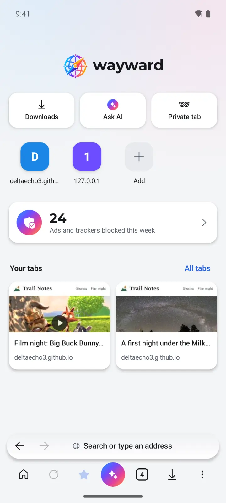
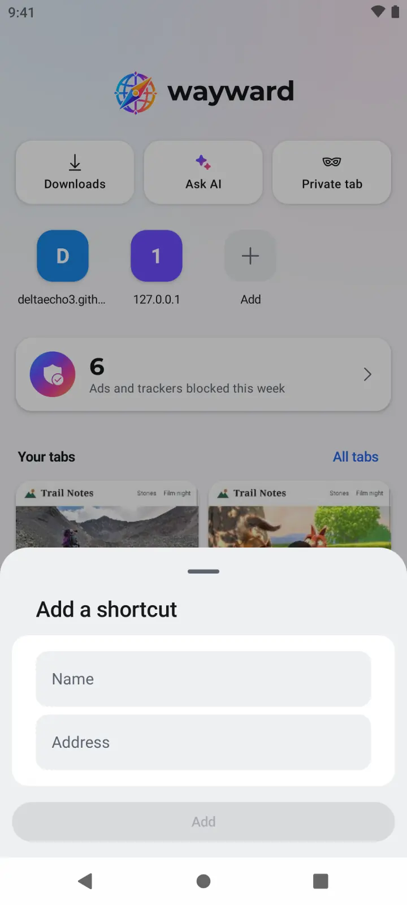
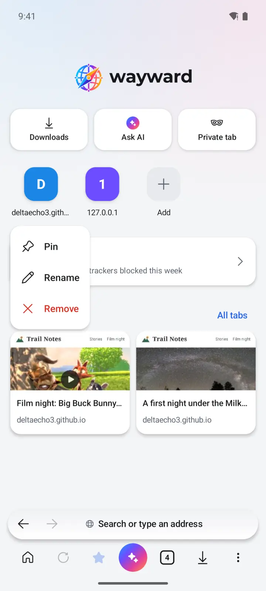
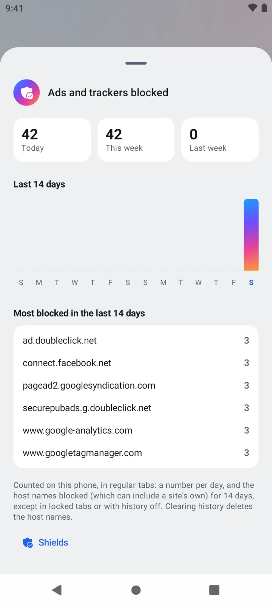
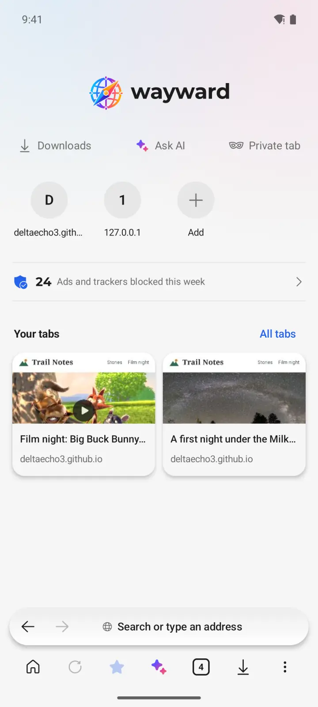
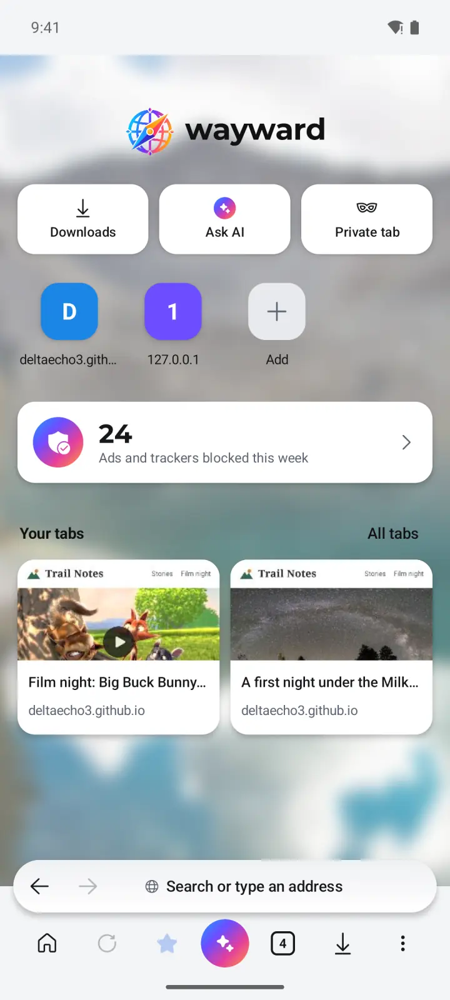
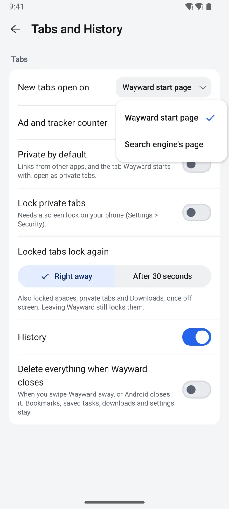

Use the start page
How-to
Open a new tab or tap Home to see your start page. Wayward draws it on your phone, so it loads nothing from the internet.

What's on it
- The Wayward globe and name at the top.
- Downloads, Ask AI and Private tab buttons. Downloads shows a count while downloads are running. Ask AI opens the assistant (see set up the assistant). Private tab opens a new private tab.
- Shortcut tiles: the ones you added come first, then the sites you visit most. A tile shows the site's icon, or a letter in Wayward's colors.
- The week's count of ads and trackers Wayward blocked. Before it has blocked anything it says Ad blocking is on.
- Your tabs: your two most recent other tabs as small cards (three on a wide screen), and All tabs, which opens the Tabs screen. Private and locked tabs never show here.
Add your own shortcuts
- Tap the + tile (Add a shortcut), fill in Name and Address, and tap Add.
- Or, on any page, open the ⋮ menu and tap Add to start page.

Hold a tile to change it:
- Pin, on one of your most visited sites, makes it one of yours, so it stays.
- Rename gives it another name. Renaming a most visited tile makes it yours too.
- Remove takes it off the start page.

How many tiles show (4, 8, 12 or 16) is set in Settings > Customize > Shortcuts. When Site icons is on there, Wayward asks each site for its icon when you visit it, never from private or locked tabs. Clearing your history deletes the icons.
Your blocked count
Tap the count to see Ads and trackers blocked: today, This week, Last week, a bar for each of the Last 14 days, and Most blocked in the last 14 days, the names blocked most with their counts. Ten show at first; Show more lists up to fifty. Shields opens the Shields & Privacy settings.
The counts are kept on your phone, from regular tabs only. The names blocked aren't kept from locked tabs, nor while history is off, and clearing your history deletes them.
To hide the count from the start page, turn off Ad blocking in Settings > Customize > Show on the home page. In the Normal look, Settings > Tabs and History > Ad and tracker counter is the same switch.

Change how it looks
In Settings > Customize > Home page:
- Look: Normal, or Minimal, which is quieter: neutral grays, round shortcuts and three parts at most.
- Wallpaper: choose a picture from your phone to put behind the start page. The words and buttons switch to dark or light so they stay readable. Frosted glass blurs the picture. A wallpaper shows in regular tabs only.
- Show on the home page turns each part on or off, and you can drag them into your own order. See Change how the home page looks.


On a wide screen the start page keeps a narrower column, so it doesn't stretch.
Home over a page
The Home button shows the start page over the page you were on. Press Back to return to that page. Forward shows the start page again.
Open new tabs on your search engine instead
Go to Settings > Tabs and History > New tabs open on and pick Search engine's page. New tabs and Home then open your search engine's front page. Pick Wayward start page to come back. The Ad and tracker counter switch only shows with the Wayward start page.

More in Browsing
- Search, keep a few tabs open, and find your way home
- Search or go to an address
- Copy, paste or share a page's address
- Scan a QR code
- Change your search engine, and search one site directly
- Open, find and close tabs
- Pin, rename or pick several tabs
- Group your tabs
- Find words on a page
- Translate a page
- Read an article without the clutter
- Desktop site, zoom, print and save as PDF
- Hold a link, picture or video for more
- When a page asks you something
- Find a page in your history, or clear it
- Bookmarks, folders, import and export
- Links from other apps, and link previews
- The widget and home-screen shortcuts
- Sign in with your password manager